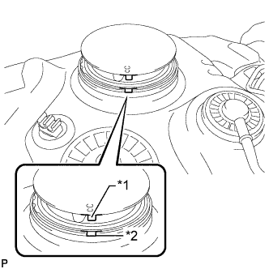
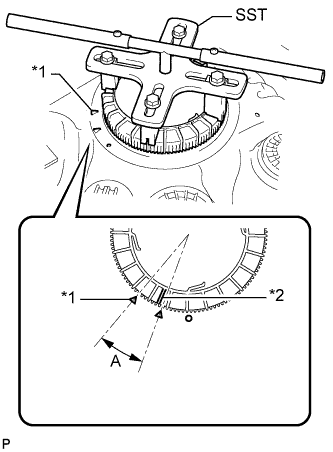

ТОПЛИВНЫЙ НАСОС (для моделей с одиночным топливным баком) > УСТАНОВКА |
| 1. УСТАНОВИТЕ ТОПЛИВОЗАБОРНИК С БЕНЗОНАСОСОМ И ДАТЧИКОМ УРОВНЯ ТОПЛИВА В СБОРЕ |
Слегка смажьте новую прокладку бензином или консистентной смазкой и установите ее на топливный бак.
|  |
Совместите выступ на топливозаборнике с бензонасосом и датчиком уровня топлива с канавкой топливного бака.
| *1 | Выступы |
| *2 | Канавка |
Установите топливозаборник с бензонасосом и датчиком уровня топлива на топливный бак.
Установите новый фиксатор на топливный бак. Удерживая топливозаборник с бензонасосом и датчиком уровня топлива, затяните фиксатор рукой на один полный оборот.
| *1 | Начальная метка (со стороны топливного бака) |
| *2 | Начальная метка (со стороны фиксатора) |
 |
Установите SST на крепежную деталь.
|  |
С помощью SST затягивайте фиксатор, пока его метка не будет находиться в диапазоне A на топливном баке, как показано на рисунке.
| *1 | Метка со стороны топливного бака |
| *2 | Метка со стороны держателя |
| 2. УСТАНОВИТЕ ТОПЛИВНЫЙ БАК В СБОРЕ |
Установите топливный бак в сборе (Нажмите здесь).